flows <- data.frame(
from = c("Coal", "Gas", "Coal", "Solar", "Grid", "Grid"),
to = c("Grid", "Grid", "Export", "Grid", "Homes", "Industry"),
value = c(30, 20, 10, 15, 40, 25)
)
vsankey(flows, from, to, value)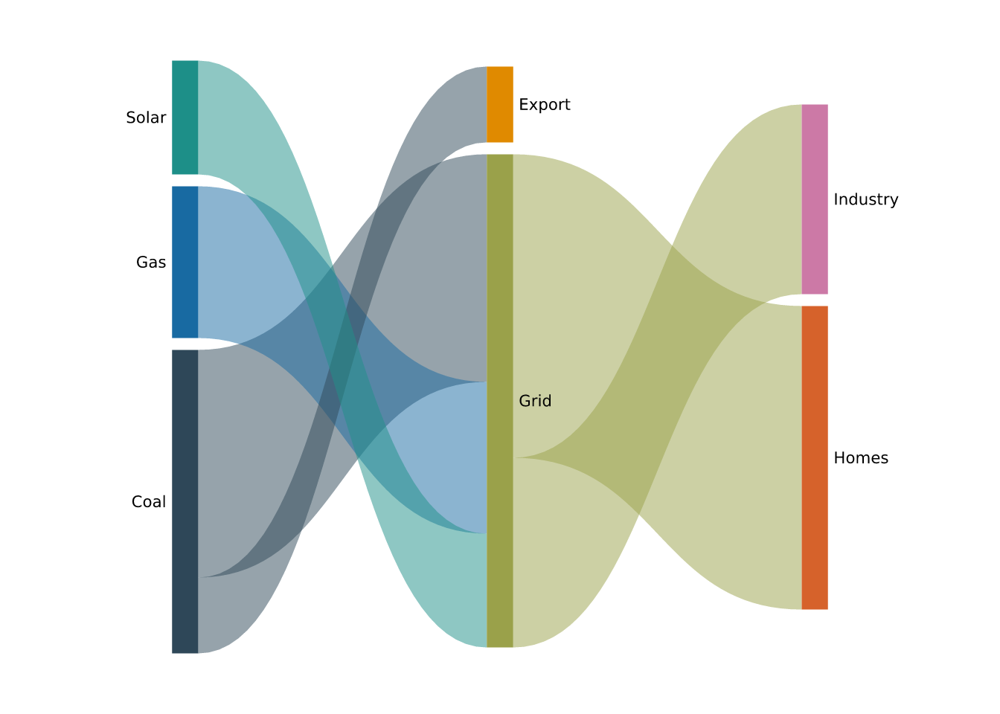
Some plot types don’t map columns to x and y at all — their geometry comes from a layout computed from the data’s structure. vgraph() (see Spatial and networks) is one; this article covers flow diagrams. Like vgraph(), these are whole plot types with their own constructor, an axis-free panel, and a layout run in R before anything is drawn.
vsankey() draws a layered flow diagram from a flow list: one row per flow, with a from node, a to node, and a value that sets the ribbon’s width.
flows <- data.frame(
from = c("Coal", "Gas", "Coal", "Solar", "Grid", "Grid"),
to = c("Grid", "Grid", "Export", "Grid", "Homes", "Industry"),
value = c(30, 20, 10, 15, 40, 25)
)
vsankey(flows, from, to, value)
Nodes are the union of the from and to values; a node that appears as both a target and a source (here, Grid) makes the diagram multi-stage. Columns are placed by a longest-path layering of the flows, and nodes within each column are ordered to minimise ribbon crossings (a deterministic barycenter sweep). Each node’s height is proportional to the larger of its total in- and out-flow, and ribbon widths are proportional to value — so the diagram reads as a conserved flow left to right.
Ribbons are coloured by their source node by default; flow_color = "target" colours them by their target instead, and flow_color = "gradient" fades each ribbon from its source colour to its target colour. show_values = TRUE appends each node’s value to its label, and node_width / node_gap tune the node rectangles.
vsankey(flows, from, to, value, show_values = TRUE, flow_color = "target")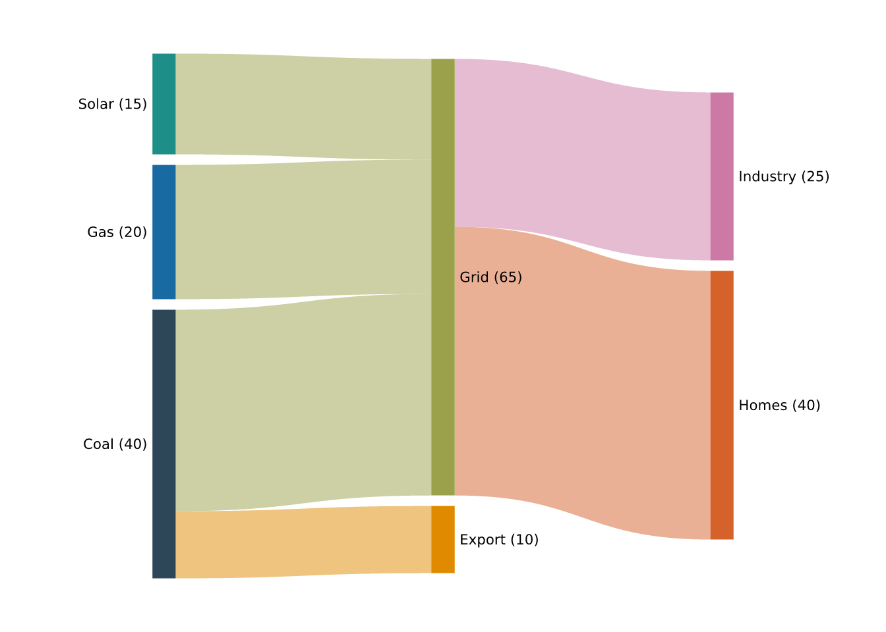
vsankey(flows, from, to, value, flow_color = "gradient")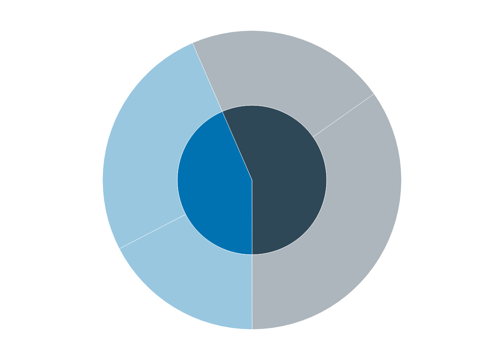
The flows must form a directed acyclic graph (a node cannot reach itself), and values must be positive. Turn node labels off with label = FALSE:
vsankey(flows, from, to, value, label = FALSE)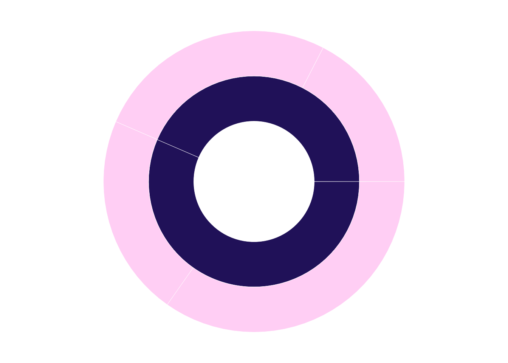
vsankey() returns an ordinary [PlotSpec], so it renders with render_plot() / print() like any other plot. Under the hood it adds a single mark_sankey() layer to an axis-free, free-aspect panel; mark_sankey() is exported too, for building a flow layer on a plot you have set up yourself.
vchord() wraps the same kind of weighted flow onto a circle: one arc (sector) per node, sized by the node’s total incident weight, and one ribbon per flow joining a slice of the source sector to a slice of the target sector through the centre. Input is a flow list (from, to, value) or a square flow matrix.
flows <- data.frame(
from = c("Coal", "Gas", "Grid", "Grid", "Solar", "Grid"),
to = c("Grid", "Grid", "Homes", "Industry", "Grid", "Grid"),
value = c(30, 20, 34, 26, 12, 6)
)
vchord(flows, from, to, value)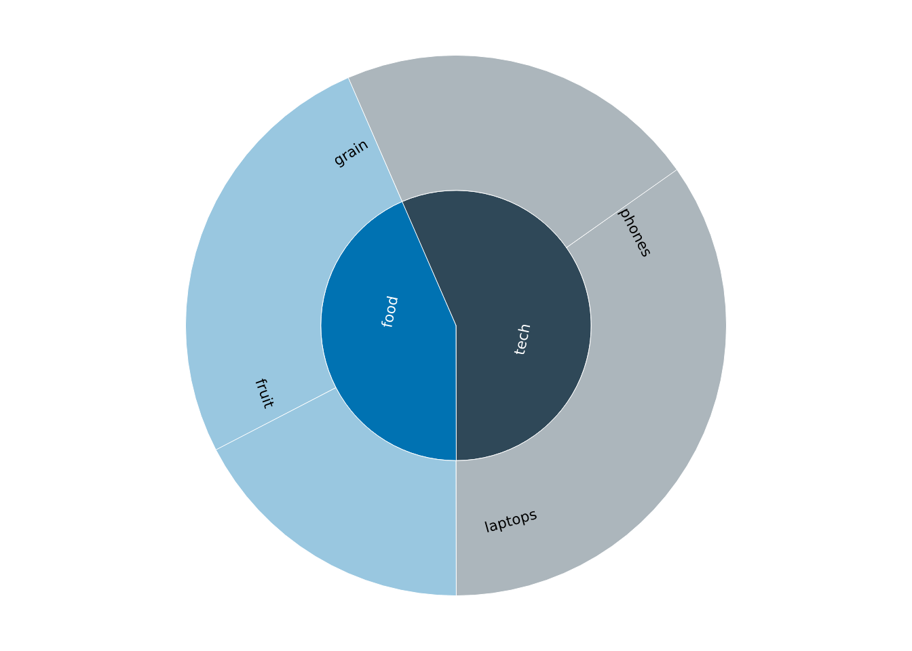
Flows are directed: each node’s arc splits into an outgoing block then an incoming block, so a -> b and b -> a are distinct ribbons and a self-flow loops from a node’s out-block to its own in-block. To make direction legible, direction fades each ribbon from opaque at its source to faint at its target ("gradient", the default), or stops it short of the target sector ("gap"), or "both". Sectors take a qualitative palette; ribbons inherit their source node’s colour (link_color = "target" to colour by target instead). sort = "value" orders sectors by weight, and gap sets the spacing between them:
vchord(flows, from, to, value, sort = "value", direction = "both")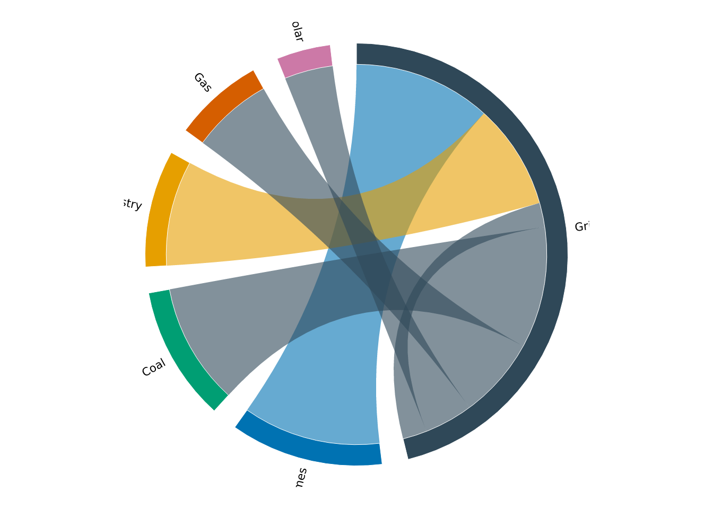
vhierarchy() draws a tree as a space-filling diagram. All four geometries take the same parent list — id, parent (NA for the root), and value (given for leaves; an internal node’s value is the sum of its children) — so you switch between them with type and nothing else changes.
h <- data.frame(
id = c("all", "tech", "food", "phones", "laptops", "fruit", "grain"),
parent = c(NA, "all", "all", "tech", "tech", "food", "food"),
value = c(NA, NA, NA, 8, 5, 6, 4)
)
vhierarchy(h, id, parent, value) # type = "sunburst" (default)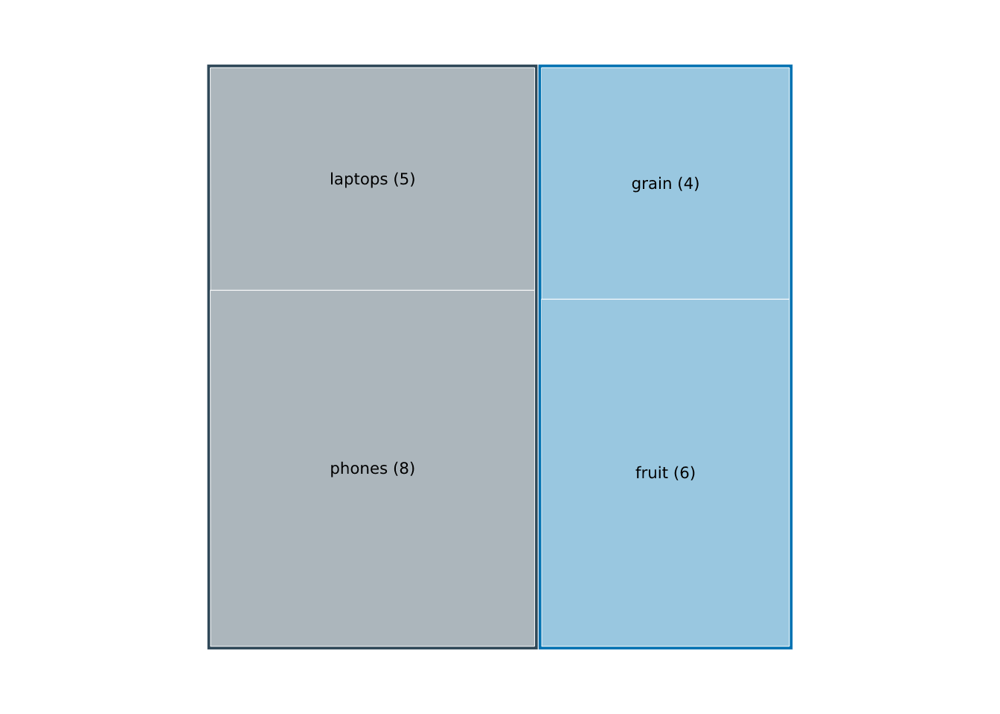
The root is structural and never drawn; every top-level branch takes a distinct hue, and its descendants inherit that hue lightened with depth, so branches stay distinguishable and each level reads as a shade of its parent. Each node is labelled with its id where the label fits (small nodes are left unlabelled, so a dense diagram stays legible), and show_values appends the value.
Sunburst lays depth out as concentric rings, each node’s angular span its share of its parent’s, starting at twelve o’clock and winding clockwise. Labels are oriented to fit their wedge and kept upright; root_label writes the root in the centre and inner_radius opens a hole for a ring/donut look.
vhierarchy(h, id, parent, value, show_values = TRUE, root_label = TRUE)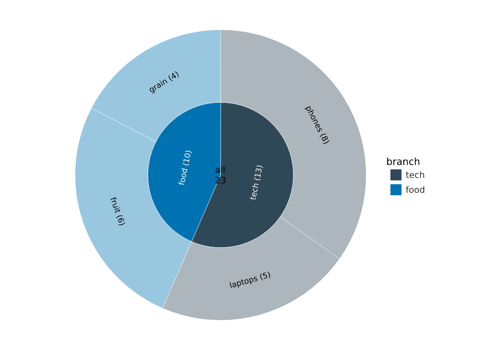
Treemap packs the tree into squarified nested rectangles, and circlepack into circles enclosed in circles — both read area as value:
vhierarchy(h, id, parent, value, type = "treemap", show_values = TRUE)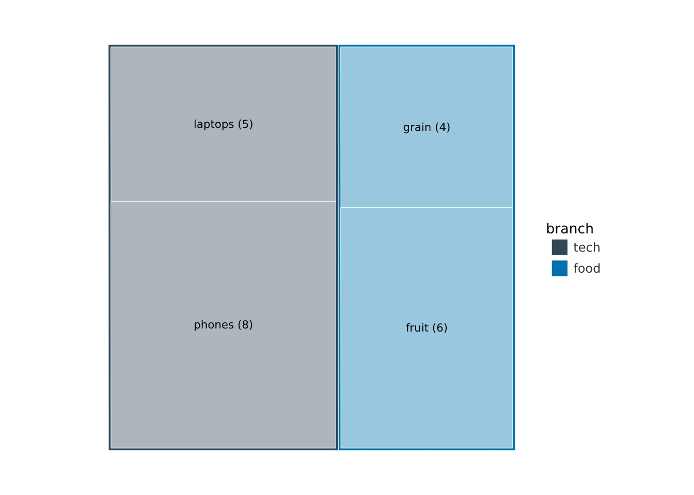
vhierarchy(h, id, parent, value, type = "circlepack", show_values = TRUE)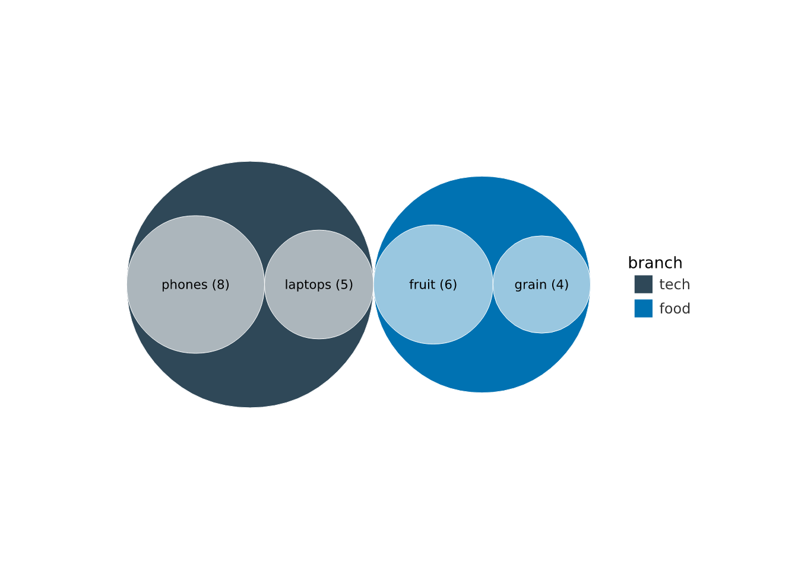
Icicle is the rectangular cousin of the sunburst: depth becomes adjacent bands and flow chooses the direction ("down", "up", "right", "left"):
vhierarchy(h, id, parent, value, type = "icicle", flow = "right")
By default each top-level branch takes a hue and its descendants inherit it lightened one step per level. The branch is an ordinary discrete fill scale, so scale_fill_*() recolours the branches and lighten controls the fade (0 for a flat colour per branch):
vhierarchy(h, id, parent, value, type = "treemap", lighten = 0.3) |>
scale_fill_manual(values = c(tech = "#1b7837", food = "#762a83"))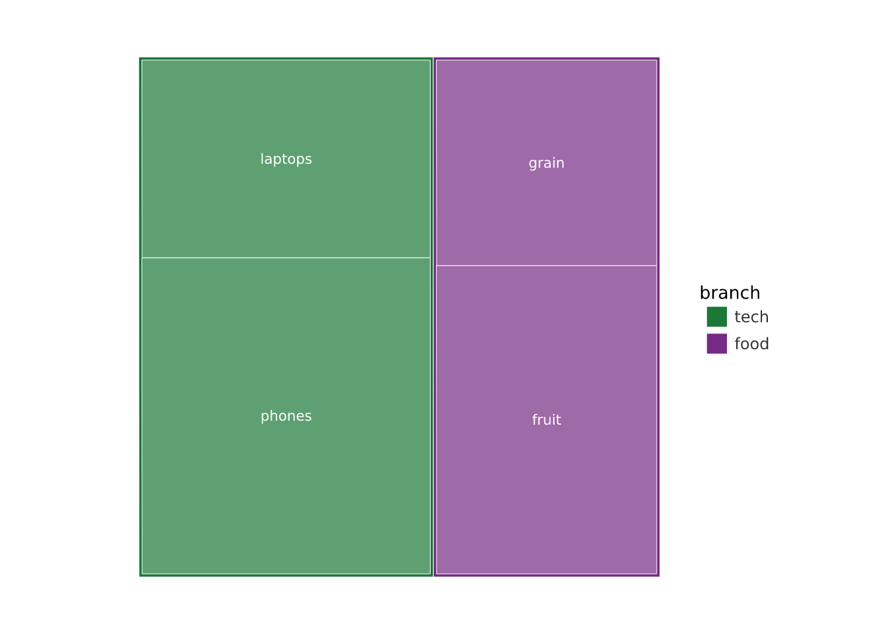
Map fill to a node column to colour every node by that variable instead, with the matching scale_fill_*(). The depth fade is dropped, since the colour now carries its own meaning:
h$owner <- c(NA, NA, NA, "Sam", "Sam", "Lee", "Lee")
vhierarchy(h, id, parent, value, fill = owner, type = "circlepack")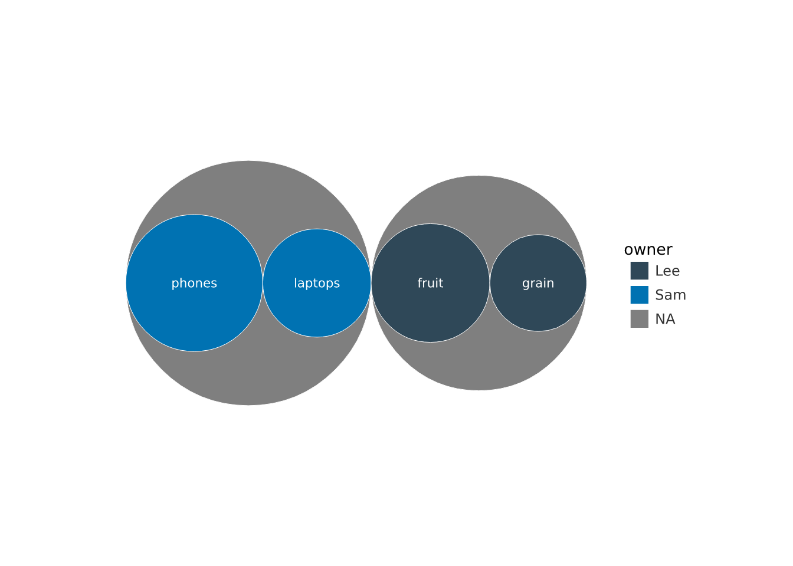
vvenn() draws a Venn/Euler diagram of 2 or 3 sets. Its disjoint regions are computed as boolean geometry with the engine’s vl_path_op() (union, intersection, difference), so each region is a solid shape rather than alpha-composited translucent circles — it stays crisp, and in PDF it avoids the rasterised mask that overlapping-fill approaches degrade into. Each region is filled by how many elements fall in exactly that combination of sets, and labelled with the count. Input is a named list of members, or a data frame of logical membership columns.
vwaffle() is a waffle (square pie): a grid of cells coloured by category, where each category takes a share of the cells proportional to its count. The eye counts squares far more accurately than it judges pie-slice angles, which is why a waffle is often the better part-of-whole chart. Feed it a value column or let it count rows:
parts <- data.frame(fuel = c("petrol", "diesel", "electric"), share = c(62, 25, 13))
vwaffle(parts, category = fuel, value = share)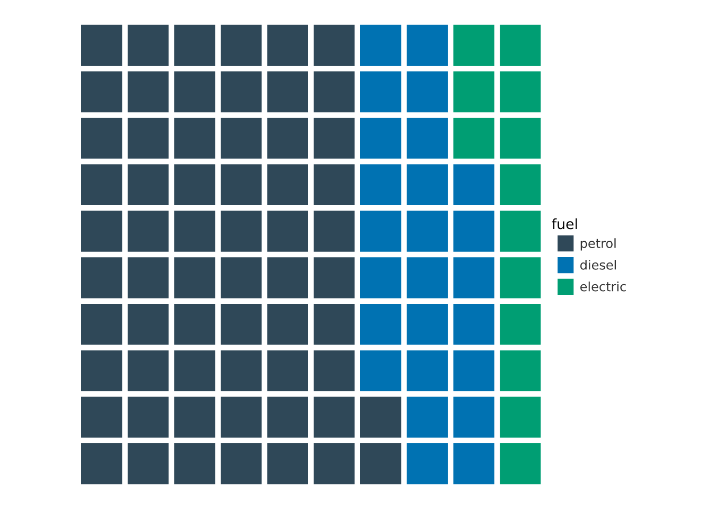
n_cells (default 100) and rows (default 10) set the grid; cells are allocated by largest remainder so they sum exactly to n_cells.
vsankey(), vchord(), vhierarchy(), vvenn(), and vwaffle() all follow the vgraph() pattern: the layout is computed in R and drawn through vellum primitives, so they are ordinary specs you can render, print, or (in future) make interactive through the same machinery as every other plot.